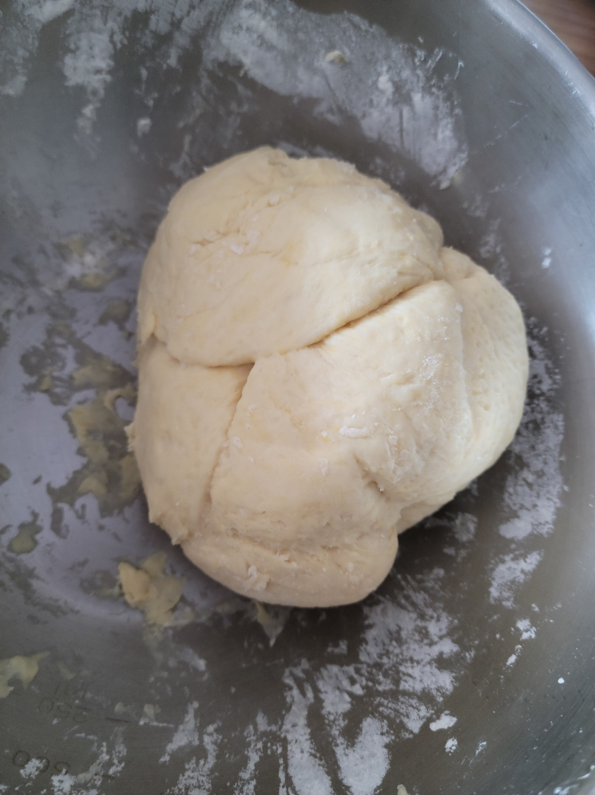
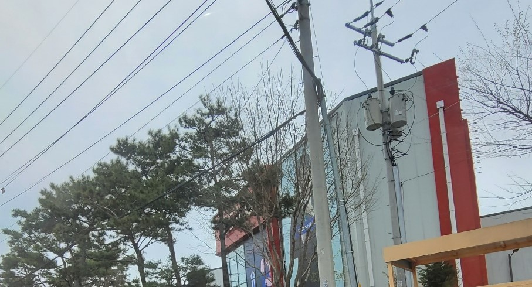
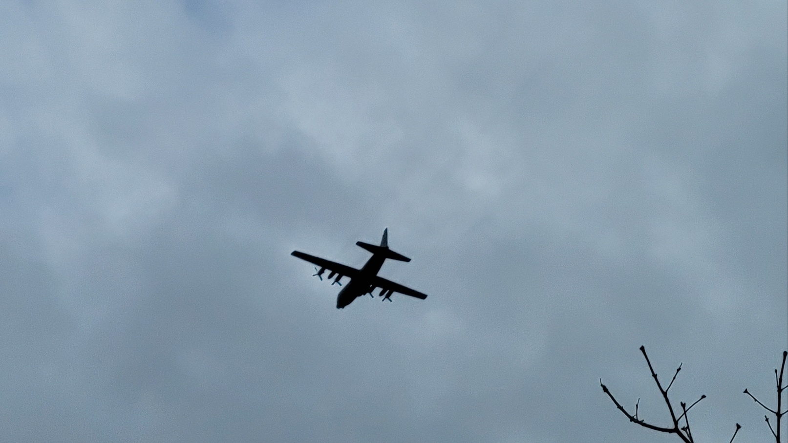
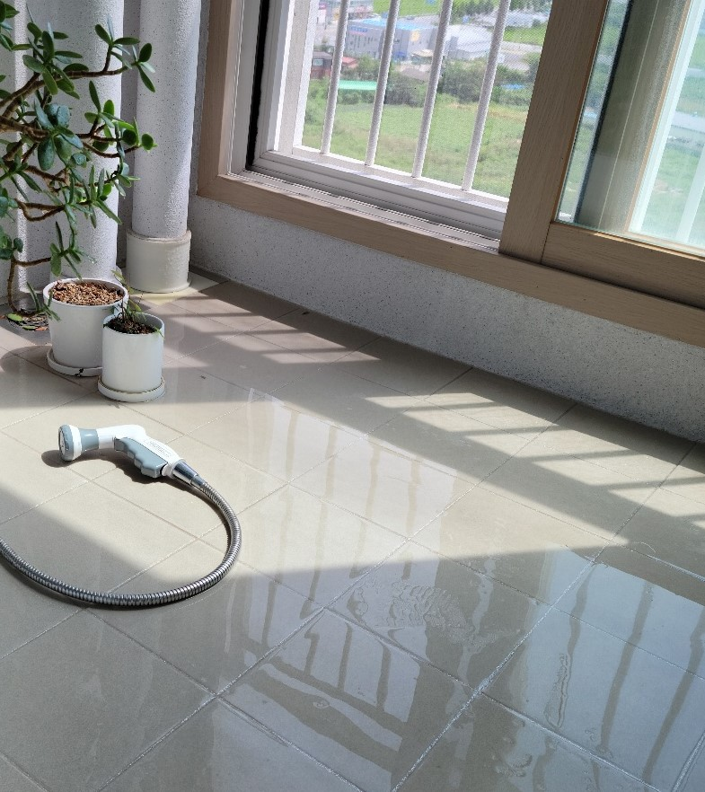

나는 미술이 좋다. 그래서 미대에 왔고 평소에도 그림 그리는 것이 취미다. 그래서 시간이 날 때 크로키를 자주한다. 그중에서 인물 크로키가 특히 재미있어서 주로 하는데 핀터레스트를 둘러보다가 내가 아는 아이돌이 화보를 찍었길래 그걸 그대로 그려봤다. 요즘에는 이런 자료가 많아서 내가 원하는 자료를 더 빠르게 찾을 수 있다. 사진 속 그림은 동작과 의상이 과감한데 이렇게 특이한 옷이랑 동세가 큰 구도가 크로키하는 재미도 있고 완성했을 때 더 잘 보이는 것 같다. 그래서 주로 이런 것을 선호한다. 그리다 보니 느낀 것은 얼굴을 닮게 그리는 것이 어렵다는 것이다. 미세한 차이로 인상이 바뀌다 보니 누군지 알아보지 못하게 되어서 어렵다.디지털로 그렸기 때문에 수정이 용이하다 보니 자꾸 신중하지 못하게 선을 긋는 버릇도 생겼다. 입시 때는 전부 손으로 그렸기 때문에 그때의 감각을 잃고 싶지 않다.
돌,풀,꽃
돌바닥 사이에 풀이 자라있고 그 위에 분홍색 꽃잎이 떨어져 있는 사진이다. 척박한 돌바닥 사이 식물이 자란 모습이 인상 깊었다. 그 위에 분홍, 보라색의 꽃잎이 떨어져 있는 게 색채적으로 대비가 잘 느껴져 강렬하게 보인다. 평소에 풍경 중에서도 예쁜 부분이 있으면 찾아서 사진을 찍는다. 주로 자연물에서 이런 괜찮은 사진이 잘 찍힌다. 나는 넓은 풍경보다 이렇게 가까이 가지 않으면 잘 안 보이는 곳들을 자세히 찍는 걸 좋아한다. 이렇게 하면 익숙하고 평범한 장소를 나만의 새로운 시각으로 보는 느낌이 든다. 요즘 사진 수업을 듣기에 사진 찍는 데에 더 주저함이 없어졌다. 일부러 잘 찍으려고 세팅하기보단 있는 걸 그대로 찍는 게 더 자연스럽고 낫다. 일부러 내가 원하는 걸 만들려고 하면 자연을 찍는 의미가 조금 퇴색된다. 그래서 사진 그래픽 작업을 되도록 최소화하고 있다.
반죽

뭔가 간식을 먹고 싶었다. 집에 마침 호떡 믹스가 있어서 호떡을 만들기로 했다. 평소에 요리를 하면 물 양 조절을 자주 실수한다. 이번엔 반죽을 하다가 반죽이 좀 덩어리 형성이 잘 된 것 같아서 사진을 찍었다. 그런데 음식은 반죽일 때 제일 예쁜 것 같다. 요리를 할 때 항상 생각하는 건데 내가 뭔가를 만드는 노력에 비해 결과물이 그렇게 좋지 않았다. 그래서 오히려 사 먹는 게 낫다는 생각이 든다. 어릴 때부터 계속 가지고 있던 생각이다. 나는 요리에는 별로 큰 재능이 없는 것 같다. 예전에 요리부를 3년 정도 하긴 했지만 그때로 잘 못했었던 기억이 난다. 그래도 못 먹을 정도는 아니라서 나름 괜찮다. 만들어서 가족이랑 같이 먹었는데 다들 잘 먹어서 마음이 좋아졌다. 만든 호떡 사진은 별로 마음에 안 들어서 안 찍었다. 그래도 요리 과정을 찍는 건 즐겁다.
건물이 바뀌다.

쇼핑몰의 사진인데 예전에 내가 다녔던 어린이집이 있던 곳이다. 원생이 많이 없어서 폐원했다. 폐원한지 좀 오래되었고 폐건물을 오래 두다가 몇 년 뒤에 여기 새로운 건물을 지었는데 그게 이 건물이다. 여기에 가본 적은 없지만 위치도 괜찮고 건물이 멋있게 생겨서 보기 좋은 것 같다. 그런데 이 근처 길목을 지나고 이 건물을 볼 때마다 예전에 다닌 어린이집이 생각나는 건 어쩔 수 없는 일이다.. 예전에 어린이집에서 좋은 추억이 많아서 폐원한 것이 참 아쉽다. 건물이 어떻게 생겼는지 기억이 안 나지만 2층이었던 것 같다. 초등학교 중학교 고등학교는 아직도 있어서 그 근처를 지나갈 때마다 그 때 기억이 나는데 여기도 지금까지 있었다면 어땠을까 의문이다. 선생님들이나 아이들에 대해 자세한 건 기억나지 않지만 지금쯤 뭐 하고 있을지 궁금해진다.
비행기

디자인관 뒤쪽에 산길이 쭉 나있는데 과제 아이디어를 얻기 위해 거기를 걷다가 갑자기 소리가 나서 위를 보니 하늘에 비행기가 떠 있었다. 비행기는 평소에도 가끔씩 뜨는 거라 신기하진 않았지만 생각해 보니 사진으로 찍은 적은 잘 없는 것 같아서 사진기를 들었다. 어릴 때는 비행기가 가는 방향을 따라서 친구랑 뛰어가기도 했다. 그만큼 비행기가 신기했다. 지금은 비행기가 뜨건 안 뜨건 관심이 없지만 이렇게 사진을 찍으니 옛날 생각이 난다. 비행기를 아직 타 본 적이 없어서 타면 어떨지 궁금하다. 나중에 돈을 모아서 한 번 여행 계획을 세워서 비행기를 타 봐야겠다. 비행기는 아래에서만 봤는데 안에서 밖을 내려다보는 풍경은 어떨까? 남들처럼 이런 경험을 하나씩 쌓아보는 게 나에게 큰 도움이 될 것 같다.
두 노란 고양이
강의 마치고 디자인관에서 나갔다.저 왼쪽에서 노란색 고양이 2마리가 사이좋게 길을 걷고 있었다. 나는 고양이를 좋아해서 우리 학교에서 고양이를 마주친 것도 신기하고 2마리에 색도 노란색으로 같아서 눈에 띄었다. 형제일 가능성도 있을 것 같다. 우리 아파트 주변에도 노란 고양이가 있어서 낯익은 느낌이 들었다. 가장 인상이 깊었던 점은 앞에 한 마리가 뒤따라오는 고양이를 확인하며 따라오는지 계속 보고 같이 가는 모습이었다. 둘의 우애가 깊어 보였다. 고양이는 단독 행동을 하는 동물인데도 자기들끼리 몰려다니는 게 많이 귀엽다고 생각했다. 흔한 사진이 아니라서 이 사진을 정말 좋아한다. 그리고 고양이들이 살도 찌고 상태가 좋아 보여서 학생들이 잘 케어해주고 있구나 하는 생각이 들었다. 둘 다 이름이 있을 것 같은데 뭔지 알고 싶다.
발코니

날이 좀 건조하거나 더운 날에는 발코니에 물을 뿌려서 청소를 한다. 물을 뿌릴 때 식물에 물도 함께 준다. 저 식물들은 키운지 거의 10년이 넘어가는 장수식물들이다. 내가 식물 관리를 잘 못하는데도 생명력이 좋아서 오래 건강하게 살았다. 볼 때마다 제대로 케어를 못하는 것 같아서 죄책감이 들기도 한다. 그래서 있는 식물을 잘 키우려고 새로운 식물 선물은 전부 거절할 수밖에 없었다. 식물을 키우는 건 어렵다. 온도나 물주는 주기를 신경 써야 하고 깜빡 잊으면 죽어버린다. 나는 여태 식물을 꽤 많이 죽였다. 사소한 일을 꾸준히 성실하게 하는 일이 나에게는 참 어려운 일이다. 그래도 나는 이 식물들을 볼 때 기분이 좋다. 삭막한 건물 발코니에 생기를 가져다주는 느낌이 든다. 또 바닥 물웅덩이에 하늘이 비친 모습이 예뻐서 찍었다.
나무 위 고양이
밤에 찍은 사진이라서 어두워 잘 보이지는 않지만 나무 위에 고양이 한 마리가 올라가 있다. 우리 아파트 근처에서 찍은 사진이고 고양이도 우리 아파트 고양인데 왜 나무 위에 올라가 있는지 흔치 않은 광경이라 궁금하기도 하고 신기해서 사진기를 들었다. 우리 집 고양이도 높은 데 올라가는 걸 좋아해서 이 고양이도 그런 이유로 올라간 것 같다는 추론을 했다. 고양이는 행동을 알 수 없는 동물이다. 아파트 주변 조명이 마침 보름달 같은 느낌을 주고 나무와 고양이의 고요하고 정적인 분위기가 마음에 드는 사진이다. 나는 이렇게 정적인 이미지를 좋아한다. 이 사진을 나의 창작 아이디어로 쓰면 재밌는 결과물이 나올 거다. 밤에 집 오느라 무서웠는데 우리 아파트 고양이가 있어서 즐거운 마음으로 귀가할 수 있었다. 다음에도 보면 좋겠다.
닭 인형
이 인형은 닭 인형인데 내가 고등학생 때 학교 축제에서 1000원을 주고 산 중고 인형이다. 귀엽게 생겨서 보자마자 사야겠다는 생각이 들었다. 후회하지 않는다. 사고 내 방에 전시해뒀는데 딱히 쓸 곳은 없다. 가끔씩 눈이 마주쳐서 놀란다. 어릴 때는 봉제 인형이나 사람 인형 같은 인형을 많이 샀던 것 같은데 어느 새부터 집에 인형이 하나도 없어졌다. 그래서 하나쯤 두어 보는 것도 좋은 일인거 같다. 인형의 생김새에 관해서 나는 정교하고 예쁜 인형보다 이렇게 대충 만들고 똑똑하게 생기지 않은 인형이 귀엽다. 관리하기도 쉽다. 복잡한 인형은 관리하기도 어려우니까. 요즘 내가 가장 좋아하는 이 인형의 얼굴을 이렇게 가까이 찍었다.눈이 까맣고 부리가 뾰족하지 않고 둥글어서 보기 좋다. 닭이 아니라 병아리 같이 생긴 것 같다. 아마 시각디자인과를 졸업하면 이런 인형 도안도 만들지 않을까?
초밥이 먹고 싶은 고양이
우리집 고양이는 사람 음식에 관심이 많다. 밥을 먹을 때면 항상 식탁에 올라와서 내려야 한다. 특히 생선이나 고기 유부 어묵 같은 비린 향이 나는 음식을 아주 좋아해서 뭔가 먹을 때 의자에 앉아서 저렇게 빤히 쳐다본다. 언제부터 이랬냐면 오래된 일이다.우리 집 고양이가 어릴 때 내가 유부초밥을 먹다가 잠깐 자리를 비웠는데 다시 와보니까 그걸 핥고 있었다. 바로 치웠는데 그때부터 사람 음식에 관심을 가지게 되었는지 뭔갈 먹을 때마다 탐을 낸다. 식탁에서 내려도 몇 번을 다시 올라와서 달려들어서 음식을 제대로 못 먹을 때도 많다. 몇 달 전에 내 밥을 앞발로 치는 바람에 반찬이 흩날려서 못 먹게 된 상황이 기억에 남는다. 이럴 때는 찬장에서 츄르를 꺼내서 주고 최대한 음식에서 관심을 돌려야 한다. 나는 나의 음식을 직접 준 적이 없음에도 몇 년 동안 꾸준히 기웃거리는 모습이 웃겨서 사진을 찍었다.이런 사진이 상당히 많아서 사진첩을 만드는 것도 고려해 봐야겠다.